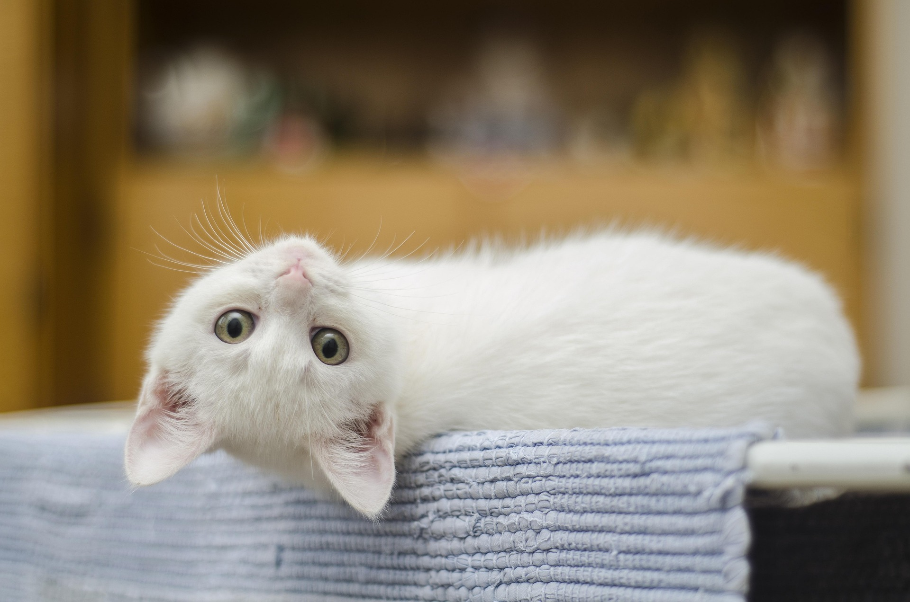
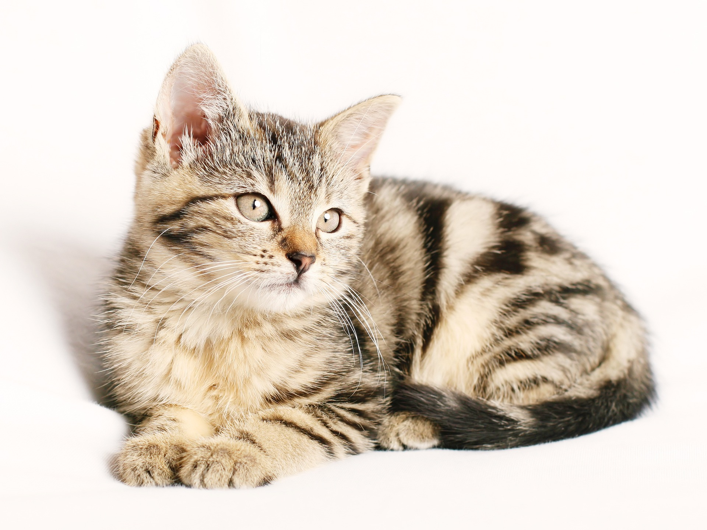
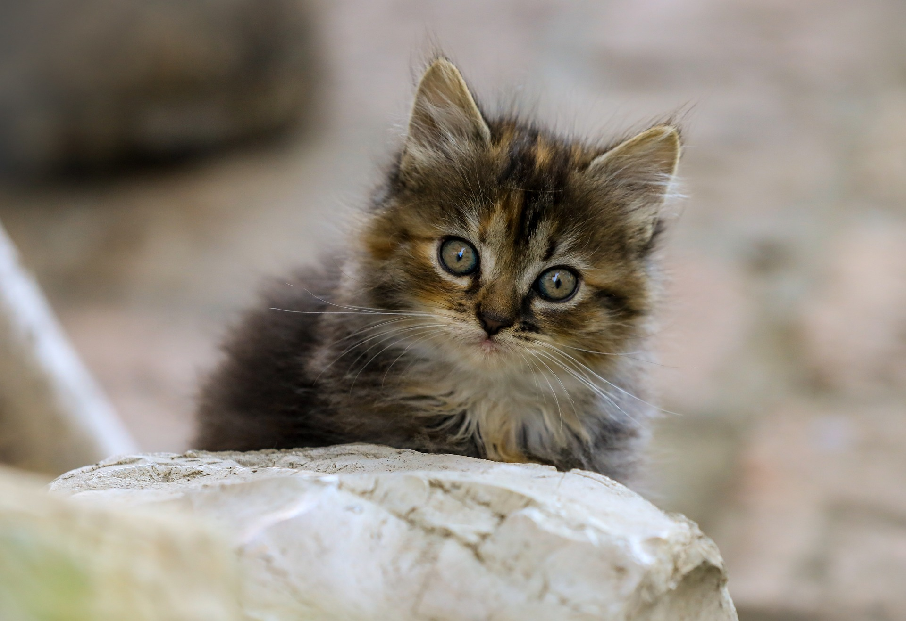
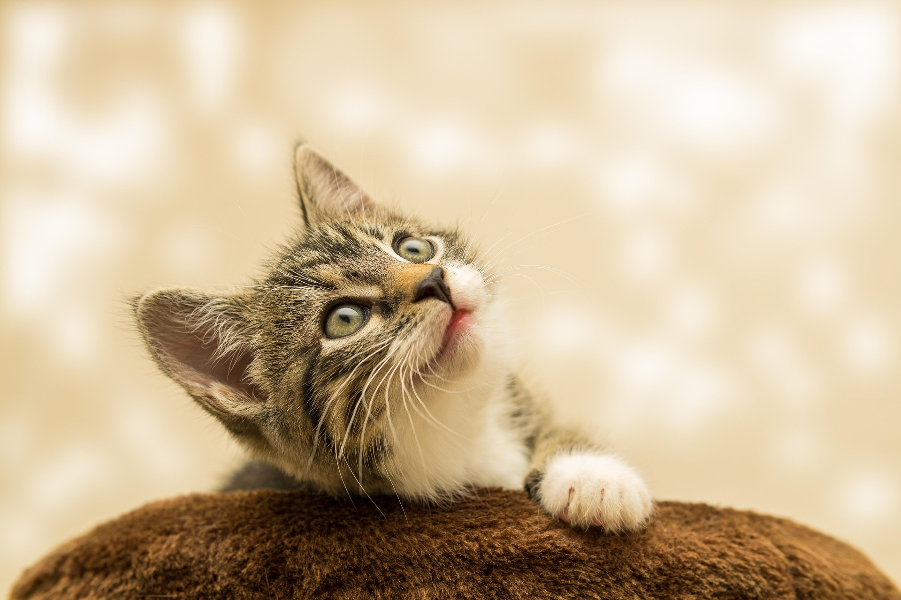
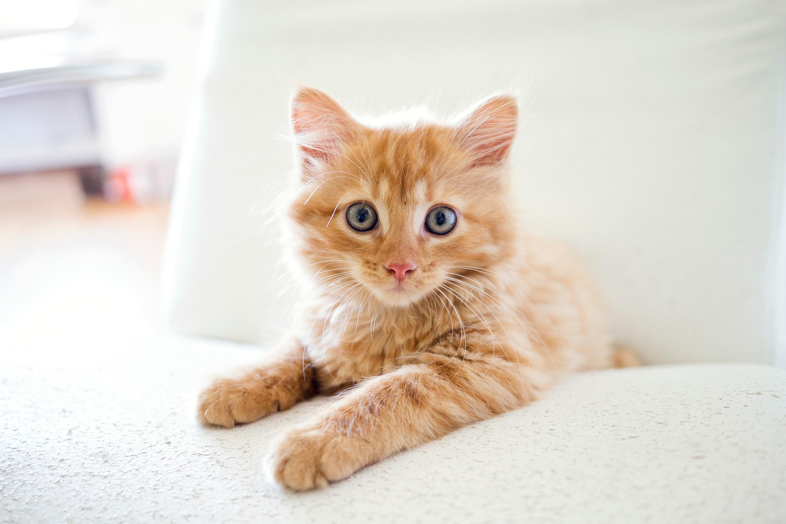

Age: 5 months, Female Cat
Izzy is a playful kitten who loves exploring her surroundings. She loves to climb and hide under blankets.

Age: 4 months, Female Cat
Daisy is a sweet kittne who enjoys her time cuddling with other kittens. She loves to sleep and play with toys.

Age: 2 months, Female Cat Pancake is a lovable kitten who's energy never seems to end. She is consatly playing and loves to chase things around.

Age: 2 months, Male Cat
Bob is an adventurous kitten who loves to explore everything. You can always catch him wondering off and finding new hiding spots.

Age: 6 months, Male Cat Caviar is a sweet kitten who just wants to be cuddled all the time. He spends most of his days in the laps of our volunteers, and would be best suited with other cats.